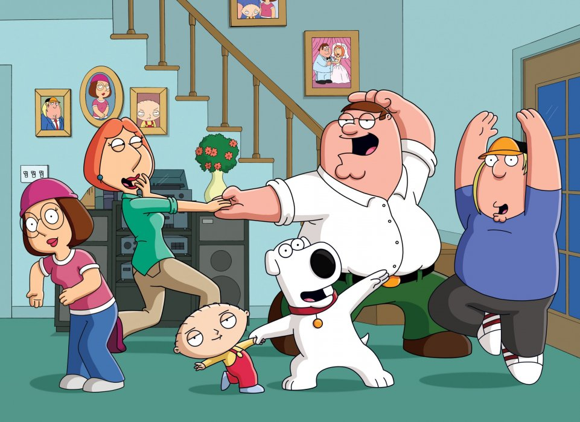

About Stewie
Stewie is awesome! He's the flamboyant and eccentric one year old infant of Peter and Lois Griffin
Stewie and his family
Stewie's Charateristics
- He is well-spoken, with an advanced vocabulary, an upper-class British accent
- he seems to be obsessed with world domination and matricide
- He shares his secrets with his confidant and teddy bear Rupert
Stewie's Family
Stewie has some awesome family. I think his best freind is Brian. He's pretty cool. Click on the links below to read more about them: